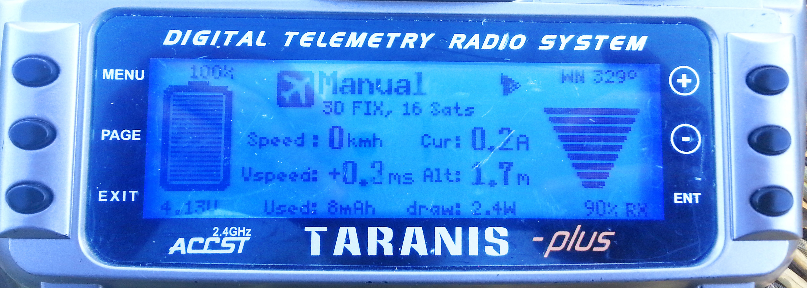
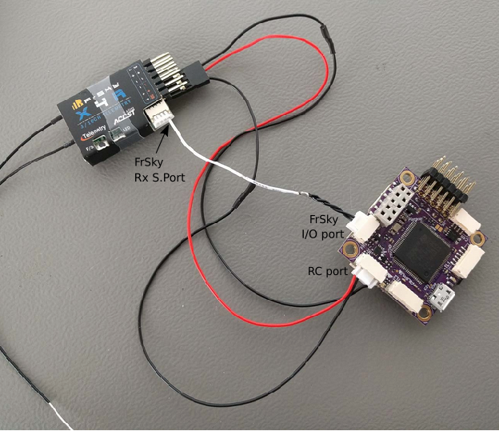

FrSky Telemetry
FrSky telemetry allows you to access vehicle telemetry/status information on a compatible RC transmitter.
Available telemetry is listed here, and includes: flight mode, battery level, RC signal strength, speed, altitude etc. Some transmitters can additionally provide audible and vibration feedback, which is particularly useful for low battery and other failsafe warnings.
PX4 supports both S.Port (new) and D (old) FrSky telemetry ports.
Hardware Setup
A typical hardware setup is shown below.

It includes:
- An FrSky-compatible RC transmitter like the FrSky Taranis X9D Plus.
- An FrSky telemetry-capable receiver like the XSR and X8R.
- A cable to connect the flight controller telemetry port to the FrSky receiver (this is separate from the connection for RC channels).
With the exception of Pixracer, Pixhawk-series UART ports and receiver telemetry ports are incompatible, and must (usually) be connected via an adapter.
Usually it is cheaper and easier to buy a ready made cable that contains this adapter and has the appropriate connectors for the autopilot and receiver. Creating a DIY cable requires electronics assembly expertise.
Ready-Made Cables
Ready-made cables (which include the required adapters) are available from:
Craft and Theory. Versions are available with DF-13 compatible PicoBlade connectors (for FMUv2/3DR Pixhawk, FMUv2/HKPilot32) and JST-GH connectors (for FMUv3/Pixhawk 2 "The Cube" and FMUv4/PixRacer v1).

PX4 Configuration
Configure the serial port on which FrSky will run using TEL_FRSKY_CONFIG. There is no need to set the baud rate for the port, as this is configured by the driver.
You can use any free UART, but typically
TELEM 2is used for FrSky telemetry (except for Pixracer, which is pre-configured to use the FrSky port by default).
If the configuration parameter is not available in QGroundControl then you may need to add the driver to the firmware:
drivers/telemetry/frsky_telemetry
No further configuration is required; FrSky telemetry auto-starts when connected and detects D or S mode.
Compatible RC Transmitters
You will need an RC transmitter that can receive the telemetry stream (and that is bound to the FrSky receiver).
Popular alternatives include:
- FrSky Taranis X9D Plus (recommended)
- FrSky Taranis X9D
- FrSky Taranis X9E
- FrSky Taranis Q X7
- Turnigy 9XR Pro
The above transmitters can display telemetry data without any further configuration. The following section(s) explain how you can customise telemetry display (for example, to create a better UI/UX).
Taranis - LuaPilot Setup
Compatible Taranis receivers (e.g. X9D Plus) running OpenTX 2.1.6 or newer can use the LuaPilot script to modify the displayed telemetry (as shown in the screenshot below).

Instructions for installing the script can be found here: LuaPilot Taranis Telemetry script > Taranis Setup OpenTX 2.1.6 or newer
If you open the LuaPil.lua script with a text editor, you can edit the configuration. Suggested modifications include:
local BattLevelmAh = -1- Use the battery level calculation from the vehiclelocal SayFlightMode = 0- There are no WAV files for the PX4 flight modes
Telemetry Messages
FrySky Telemetry can transmit most of the more useful status information from PX4. S-Port and D-Port receivers transmit different sets of messages, as listed in the following sections.
S-Port
S-Port receivers transmit the following messages from PX4 (from here):
- AccX, AccY, AccZ: Accelerometer values.
- Alt: Barometer based altitude, relative to home location.
- Curr: Actual current consumption (Amps).
- Fuel: Remaining battery percentage if
battery_capacityvariable set and variablesmartport_fuel_percent = ON, mAh drawn otherwise. - GAlt: GPS altitude, sea level is zero.
- GPS: GPS coordinates.
- GSpd: Current horizontal ground speed, calculated by GPS.
- Hdg: Heading (degrees - North is 0°).
- VFAS: Actual battery voltage value (Voltage FrSky Ampere Sensor).
- VSpd: Vertical speed (cm/s).
- Tmp1: Flight mode, sent as an integer: 18 - Manual, 23 - Altitude, 22 - Position, 27 - Mission, 26 - Hold, 28 - Return, 19 - Acro, 24 0 Offboard, 20 - Stabilized, 21 - Rattitude, 25 - Takeoff, 29 - Land, 30 - Follow Me.
- Tmp2: GPS information. Right-most digit is GPS fix type (0 = none, 2 = 2D, 3 = 3D). Other digits are number of satellites.
- 0420: Distance to GPS home fix (metres).
The following "standard" S-Port messages are not supported by PX4: ASpd, A4.
D-port
D-Port receivers transmit the following messages (from here):
- AccX, AccY, AccZ: Accelerometer values.
- Alt: Barometer based altitude, init level is zero.
- Cels: Average cell voltage value (battery voltage divided by cell number).
- Curr: Actual current consumption (Amps).
- Fuel: Remaining battery percentage if capacity is set, mAh drawn otherwise.
- Date: Time since powered.
- GAlt: GPS altitude, sea level is zero.
- GPS: GPS coordinates.
- GSpd: Current speed, calculated by GPS.
- Hdg: Heading (degrees - North is 0°).
- RPM: Throttle value if armed, otherwise battery capacity. Note that blade number needs to be set to 12 in Taranis.
- Tmp1: Flight mode (as for S-Port).
- Tmp2: GPS information (as for S-Port).
- VFAS: Actual battery voltage value (Voltage FrSky Ampere Sensor).
- Vspd: Vertical speed (cm/s).
FrSky Telemetry Receivers
Pixhawk/PX4 supports D (old) and S (new) FrSky telemetry. The table belows all FrSky receivers that support telemetry via a D/S.PORT (in theory all of these should work).
Note that the X series receivers listed below are recommended (e.g. XSR, X8R). The R and G series have not been tested/validated by the test team, but should work.
| Receiver | Range | Combined output | Digital telemetry input | Dimensions | Weight |
|---|---|---|---|---|---|
| D4R-II | 1.5km | CPPM (8) | D.Port | 40x22.5x6mm | 5.8g |
| D8R-XP | 1.5km | CPPM (8) | D.Port | 55x25x14mm | 12.4g |
| D8R-II Plus | 1.5km | no | D.Port | 55x25x14mm | 12.4g |
| X4R | 1.5km | CPPM (8) | Smart Port | 40x22.5x6mm | 5.8g |
| X4R-SB | 1.5km | S.Bus (16) | Smart Port | 40x22.5x6mm | 5.8g |
| X6R / S6R | 1.5km | S.Bus (16) | Smart Port | 47.42×23.84×14.7mm | 15.4g |
| X8R / S8R | 1.5km | S.Bus (16) | Smart Port | 46.25 x 26.6 x 14.2mm | 16.6g |
| XSR / XSR-M | 1.5km | S.Bus (16) / CPPM (8) | Smart Port | 26x19.2x5mm | 3.8g |
| RX8R | 1.5km | S.Bus (16) | Smart Port | 46.25x26.6x14.2mm | 12.1g |
| RX8R PRO | 1.5km | S.Bus (16) | Smart Port | 46.25x26.6x14.2mm | 12.1g |
| R-XSR | 1.5km | S.Bus (16) / CPPM (8) | Smart Port | 16x11x5.4mm | 1.5g |
| G-RX8 | 1.5km | S.Bus (16) | Smart Port + integrated vario | 55.26178mm | 5.8g |
| R9 | 10km | S.Bus (16) | Smart Port | 43.3x26.8x13.9mm | 15.8g |
| R9 slim | 10km | S.Bus (16) | Smart Port | 43.3x26.8x13.9mm | 15.8g |
The above table originates from http://www.redsilico.com/frsky-receiver-chart and FrSky product documentation.
DIY Cables
It is possible to create your own cables. You will need connectors that are appropriate for your autopilot (e.g. JST-GH connectors for FMUv3/Pixhawk 2 "The Cube" and FMUv4/PixRacer v1, and DF-13 compatible PicoBlade connectors for older autopilots).
The Pixracer includes electronics for converting between S.PORT and UART signals, but for other boards you will need a UART to S.PORT adapter. These can be sourced from:
More information about the connections for different boards is given below.
Pixracer to S-port Receivers
Connect the Pixracer FrSky TX and RX lines together (solder the wires together) to the X series receiver's S.port pin. GND need not be attached as this will have been done when attaching to S.Bus (normal RC connection).
The S-port connection is shown below (using the provided I/O Connector).


Pixracer to D-port Receivers
The vast majority of users now prefer to use S.PORT.
Connect the Pixracer FrSky TX line (FS out) to the receiver's RX line. Connect the Pixracer FrSky RX line (FS in) to the receivers TX line. GND need not be connected as this will have been done when attaching to RC/SBus (for normal RC).
Pixhawk Pro
Pixhawk 3 Pro can be connected to TELEM4 (no additional software configuration is needed). You will need to connect via a UART to S.PORT adapter board, or a ready-made cable.
Other Boards
Most other boards connect to the receiver for FrSky telemetry via the TELEM2 UART. This includes, for example: Pixhawk 1, mRo Pixhawk, Pixhawk2.
You will need to connect via a UART to S.PORT adapter board, or a ready-made cable.
Additional Information
For additional information, see the following links:
- FrSky Taranis Telemetry
- Taranis X9D: Setting Up Telemetry (Video Tutorial)
- Px4 FrSky Telemetry Setup with Pixhawk2 and X8R Receiver (DIY Cables)